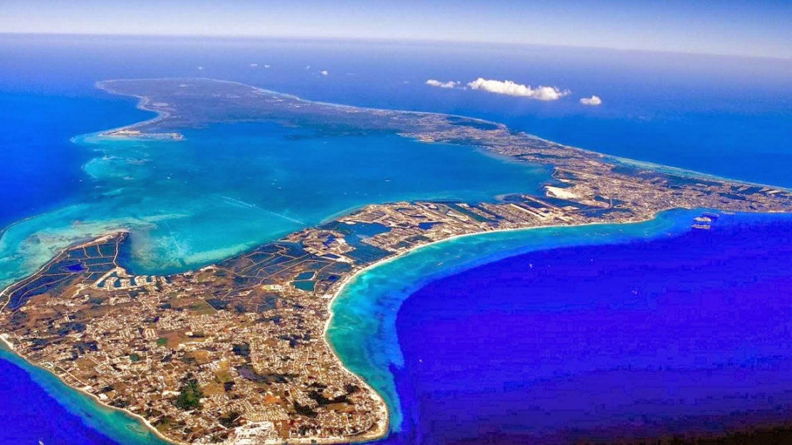

Welcome to my traveling page! Traveling to various places has always been one of my favorite hobbies. While it is expensive, I think it is always important to see new places, meet new people, and learn about places that you have never been before.
Cayman Islands -- Los Angeles, California -- New York City, New York
I traveled to the Cayman Islands when I was 17 years old with my family on vacation. I had never been here before and it was an eye opening vacation. Growing up in Maine for all of my life, seeing the Cayman Islands was a good way to see and learn about a different culture that I had not experienced before.
I traveled to Los Angeles for a leadership conference over the winter of 2018. I was there for a weekend and was able to birefly tour around the city and visit some beautiful locations including Venice Beach. This is a destination that I will make a point to visit again and maybe live at some day.
I first traveled to New York City when I was just 12 years old with my friends and their family. New York City is a lot to handle at just 12 years old. I have now been to NYC three times and I have not even touched the surface of everything it has to offer.